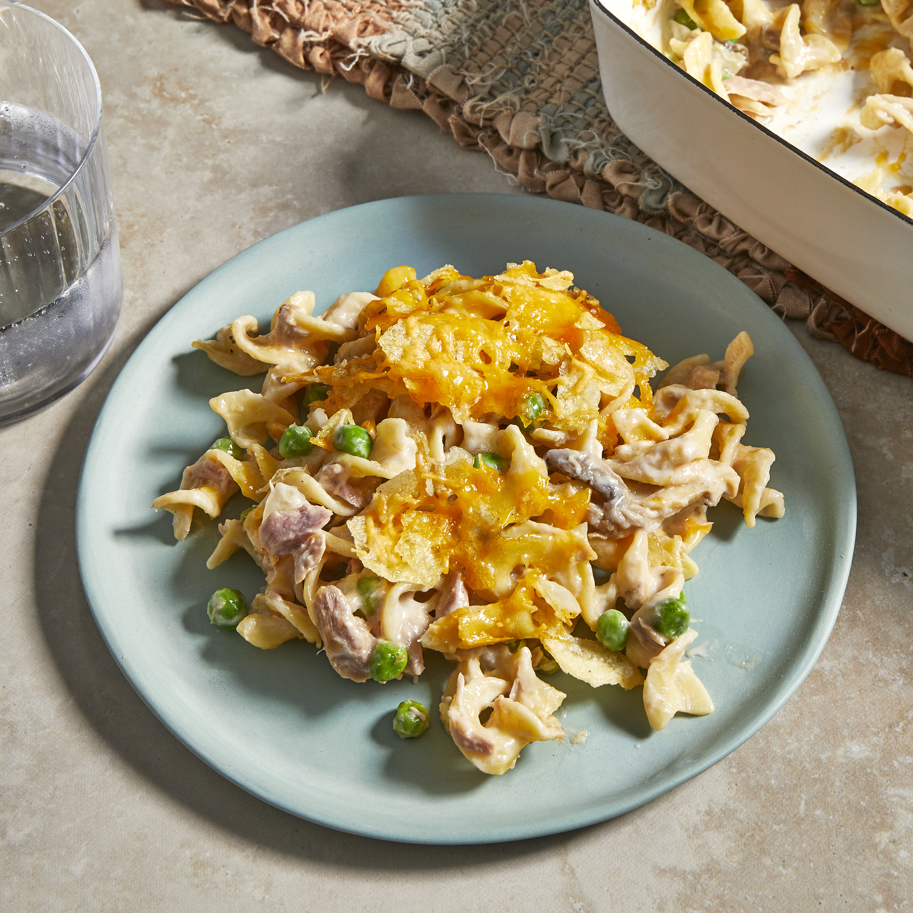

Valhalla Tuna Casserole Recipe

Description
This is an all-time favorite tuna casserole that Valhalla kitchen chefs had perfected for Odin and Co. Needless to say, the potato chips give the casserole a crunchy crust.
Ingredients:
- 1 (12 ounce) package egg noodles
- 1/4 cup chopped onion
- 2 cups shredded Cheddar cheese
- 1 cup frozen green peas
- 2 (5 ounce) cans tuna, drained
- 2 (10.75 ounce) cans condensed cream of mushroom soup
- 1/2 (4.5 ounce) can sliced mushrooms
- 1 cup crushed potato chips
Steps:
- Bring a large pot of lightly salted water to a boil. Cook pasta in boiling water for 8 to 10 minutes, or until al dente; drain.
- Preheat oven to 425 degrees F (220 degrees C).
- In a large bowl, thoroughly mix noodles, onion, 1 cup cheese, peas, tuna, soup and mushrooms. Transfer to a 9x13 inch baking dish, and top with potato chip crumbs and remaining 1 cup cheese
- Bake for 15 to 20 minutes in the preheated oven, or until cheese is bubbly.
Return to main page